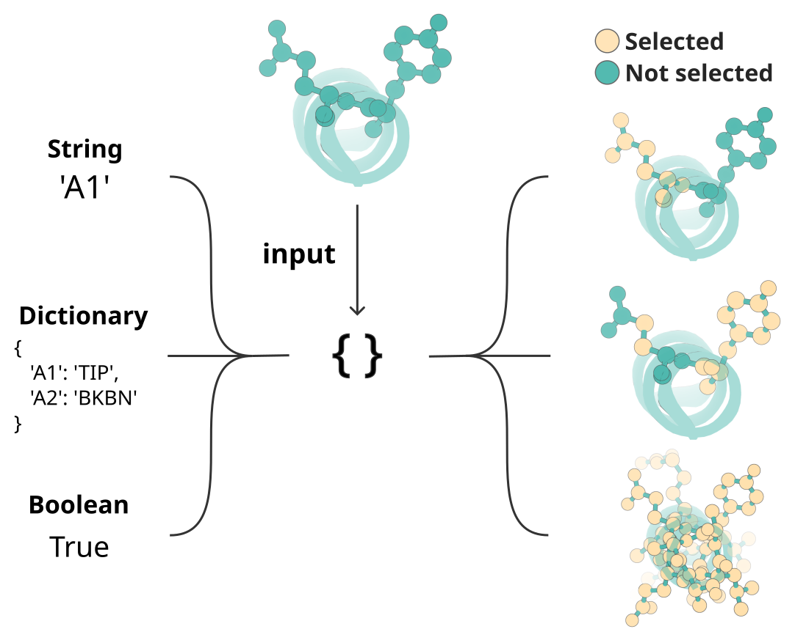
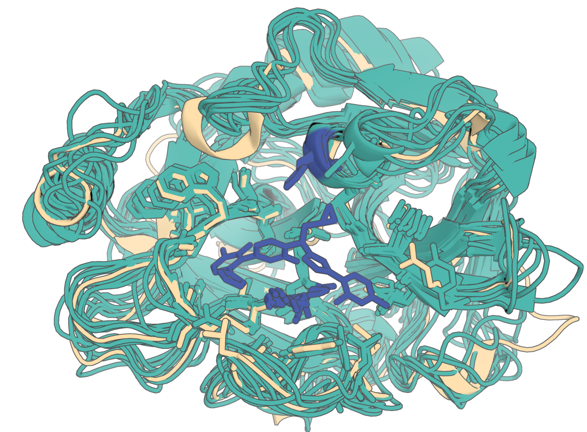
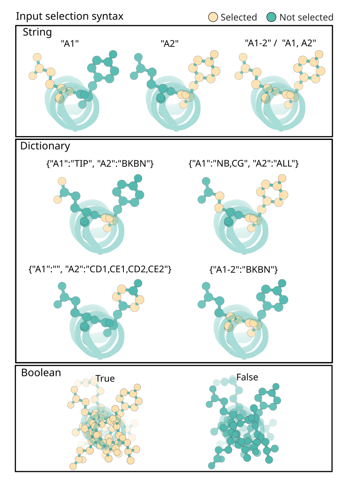

RFdiffusion3 — Input Specification & Command-line arguments¶
RFdiffusion3 accepts inputs in two forms:
Constrains to be applied to the inference run are given in JSON or YAML files
Details about the job (number of designs, output directory, etc.) are given as command line arguments
This document outlines the various input settings and configurations you can use with RFdiffusion3.
Contents¶
Quick start¶
For more detailed information on RFdiffusion3 inputs and outputs, see Inference Calculation Basics
JSON inputs take the following top-level structure;
{
"spec-1": { // First design configuration
"input": "<path/to/pdb>",
"contig": "50-80,/0,A1-100", // Diffuses length 50-80 monomer in chain A & selects indices A1 -> A100 in input pdb to have fixed coordinates and sequences
"select_unfixed_sequence": "A20-35", // Converts selected indices in input to have unfixed sequence (inputs become atom14).
"ligand": "HAX,OAA", // Selects ligands HAX and OAA based on res name in the input
},
"spec-2": {
// ... args for the second (independent) configuration for design.
}
}
You can then run inference at the command line with:
rfd3 design out_dir=<path/to/outdir> inputs=<path/to/inputs>
CLI arguments¶
Required CLI arguments:¶
out_dir— The directory that output files from the inference run will be stored in. If the directory does not exist it will be created. This does not change how the output files are named.inputs— The path and file name of the JSON or YAML file where you have defined your inference constraints.
Other Useful CLI arguments:¶
(From the default config)
n_batches— number of batches to generate per input key (default: 1).diffusion_batch_size— number of diffusion samples (designs) per batch (default: 8). Ifn_batches=1anddiffusion_batch_size=8then 8 designs will be generated from the inference run.specification— JSON overrides for the per-example InputSpecification (default:{}). For example, you can runrfd3 design inputs=null specification.length=200for a quick debug of creating a 200-length protein.inference_sampler.num_timesteps— diffusion timesteps for sampling (default: 200).inference_sampler.step_scale— scales diffusion step size; higher → less diverse, more designable (default: 1.5).low_memory_mode— memory-efficient tokenization mode; setTrueif GPU RAM is tight (default: False).ckpt_path— String containing he path and file name of the checkpoint path you want to use (default: rfd3)skip_existing— Skip designing any systems whose output files already exist in the specifiedout_dir(default: True).global_prefix— This setting allows you to change the beginning of the name of the output files from the name of the input JSON or YAML file to your own string (default: null).dump_trajectories— If True, the trajectory files are also saved to the specified output directory (default: False).prevalidate_inputs— Check that your inputs (JSON or YAML file) are valid before running inference (default: False).low_memory_mode- Set to True (default: False) for memory efficient tokenization mode.
Other CLI Options:¶
json_keys_subset— Allows the user to extract only a subset of the JSON keys provided in theinputsfile (default: null).inference_sampler—num_timesteps— Number of diffusion denoising timesteps (default: 200). Controls how many steps the reverse diffusion process takes. More steps can improve quality at the cost of runtime.n_recycle— Number of recycling iterations per diffusion step (default: null, uses the model checkpoint default of 2). Recycling allows the network to refine its predictions iteratively within each denoising step.kind— Change this value tosymmetry(default: default) to turn on symmetry mode for the inference sampler.cfg_features— The values specified (options areactive_donor, active_acceptor, or ref_atomwise_rasa) are set to 0 for classifier-free guidance. Classifier-free guidance is how the diffusion model can steer the calculation towards a condition without training a separate classifier.use_classifier_free_guidance— If set toTrue, RFD3 can use classifier-free guidance to guide the system towards a condition without training a separate classifier (default:False).cfg_t_max— The maximum time to apply classifier-free guidance to the inference run (default: null).cfg_scale— Controls the influence of the classifier-free guidance adjustment (default: 1.5).center_option: Specifies how to center the coordinates during the inference run to ensure that structures are alined around a specific point. Options include:all— (default) Uses the center of mass (COM) of all atomsmotif— Uses the COM of the motif atoms with fixed coordinatesdiffuse— Uses the COM of all fixed coordinates that are not part of motif atoms
s_trans— Translational noise scale for augmentation during inference (default: 1.0).
allow_realignment— If set toTrue(default: False) then the noised structure can be realigned during inference based on the location of a given motif. From Issue #154: It is generally not needed to include this option, there are fewer ‘weird’ interactions with motif scaffolding when it’s set to False.noise_scale— This parameter sets the scaling for the noise during inference (default 1.003). A smaller value will lead to less noise in your system leading to less diversity in the outputs.p— Determines the ‘shape’ of the noise schedule (default: 7).gamma_0— This value (default: 0.6) influences the diversity of the designs from RFD3. A lower value increases designability but decreases diversity.gamma_min— Controls whengamma_0is used, ift>gamma_min,gamma_0is used as the value ofgamma, which influences the diversity of the designs from RFD3.s_jitter_origin— Controls the standard deviation of the Gaussian distribution that is used to ‘jitter’ the motif offset (default: 0.0, no jitter).
cleanup_guideposts— Set toFalse(default: True) to save the guideposts used during inference, see Debugging recommendations for more information.cleanup_virtual_atoms— Set toFalse(default: True) to save information about the diffused virtual atoms used during inference. RFD3 uses virtual atoms to account for the different number of atoms in side chains during the design process. RFD3 is atom based, however the number of atoms in a residue will differ based on its side chain, which is only determined after some diffusion steps have occurred, meaning virtual atoms are necessary for those steps. See Debugging recommendations for more information.read_sequence_from_sequence_head— Used during training, it is not recommended to change this setting (default: True).output_full_json— Output all specification information to the JSON file that gets created for each design (default: True).dump_prediction_metadata_json— IfTrue, the metadata for the inference run will be included in the output JSON file (default: True).align_trajectory_structures— Aligns the structures in the output trajectories (default: False).
The full config of default arguments that are applied can be seen in inference_engine/rfdiffusion3.yaml
InputSpecification fields¶
Below is a table of all of the inputs that the InputSpecification accepts. Use these fields to describe the constraints you want to apply to your system during inference.
For the fields with the
InputSelectiontype, see section The InputSelection Mini-Language.
Many of the settings here will mention a ‘contig string’, see the Contig Strings section for more details.
Field |
Type |
Description |
|---|---|---|
|
|
Path to and file name of PDB/CIF. Required if you provide contig+length. |
|
internal |
Pre-loaded |
|
|
(Can only pass a contig string.) Indexed motif specification, e.g., |
|
|
(Can only pass a contig string or dictionary.) Unindexed motif components, the specified residues can be anywhere in the final sequence. See Unindexing Specifics for more information. |
|
|
Total design length constraint; |
|
|
Ligand(s) by chemical component name (from RSCB PDB) or index. |
|
|
Optional args to CIF loader. See CIF parser options for more information. |
|
|
Extra metadata (e.g., logs). Current options include |
|
|
|
|
|
Atoms with fixed coordinates. See the Select Fixed Atoms subsection for more information. |
|
|
Where sequence can change. Default is |
|
|
Selection of RASA (Relatively Accessible Surface Area) for buried, partially buried, and exposed conditioning, respectively. Only contig string and dictionary are acceptable inputs. |
|
|
Atom-wise donor/acceptor flags. Atom-wise selection of hydrogen bond donors and acceptors, respectively. Only dictionary inputs allowed. See RFdiffusion3 — Nucleic acid binder design examples for an example. |
|
|
Atom-level or residue-level hotspots. Hotspots will typically be at most 4.5 Å to any heavy atom in the designed structure. Typically used for designing binders. |
|
|
Fixed backbone, redesigned sidechains for motifs (input structures). |
|
|
|
|
|
|
|
|
|
|
|
Default |
|
|
Default |
|
|
Noise (Å) for partial diffusion, enables partial diffusion (sets the noise level.) Recommended values are 5.0-15.0 Å. See Partial Diffusion for more information. |
A few notes on the above:
Unified selections. All per-residue/atom choices now use InputSelection:
You can pass
True/False, a contig string ("A1-10,B5-8"), or a dictionary ({"A1-10": "ALL", "B5": "N,CA,C,O"}).Selection fields include:
select_fixed_atoms,select_unfixed_sequence,select_buried,select_partially_buried,select_exposed,select_hbond_donor,select_hbond_acceptor,select_hotspots.
Clearer unindexing. For unindexed motifs you typically either fix
"ALL"atoms or explicitly choose subsets such as"TIP"/"BKBN"/explicit atom lists via a dictionary (see examples). ("ALL"= all atoms,"TIP"= tip atoms,"BKBN"= backbone atoms.) When usingunindex, only the atoms you mark as fixed are carried over from the input.Reproducibility. The exact specification and the sampled contig are logged back into the output JSON. We also log useful counts (atoms, residues, chains).
Safer parsing. You’ll now get early, informative errors if:
You pass unknown keys,
A selection doesn’t match any atoms,
Indexed and unindexed motifs overlap,
Mutually exclusive selections overlap (e.g., two RASA bins for the same atom).
Backwards compatible. Add
"dialect": 1to keep your old configs running while you migrate. (Deprecated.)
The InputSelection Mini-Language¶
Fields marked as InputSelection accept either a boolean, a contig-style string, or a dictionary. Dictionaries are the most expressive and can also use shorthand values like ALL, TIP, or BKBN:
select_fixed_atoms:
A1-2: BKBN # equivalent to 'N,CA,C,O'
A3: N,CA,C,O,CB # specific atoms by atom name
B5-7: ALL # Selects all atoms within B5,B6 and B7
B10: TIP # selects common tip atom for residue (constants.py)
LIG: '' # selects no atoms (i.e. unfixes the atoms for ligands named `LIG`)
{kind=link}

Graphical representation of the different ways to specify portions of a structure using RFD3’s InputSelection mini-language.¶
Contig Strings¶
A ‘contig string’ is a string that contains residue information and is used in many of the settings in the table above. Here are some formatting specifics:
Different pieces of information included in the string are separated by commas
Ranges of residues are specified by a dash (
-) between the starting and ending residueChain breaks are represented by
/0Residue numbers or ranges with a chain label before the number come from the input structure
Residue numbers or ranges without a chain label before the number will be designed. If given a range, the designed region will have a length that is uniformly random within the specified range.
For example:
my_calculation:
input: path/to/my/input.pdb
contig: A40-60,70,A120-170,A203,/0,B3-45,60-80
A40-60: the design will start with residues 40-60 from the A chain of the input structure.70: RFD3 will design a chain with exactly 70 residues that will connect to A60A120-170: RFD3 will include a bond between the last designed residue and residue A120, and then include residues A120-A170 from the input structure.A203: A bond will be created between A170 and A203 and A203 will be in the final structure. However, residues A171-A202 will not be in the final structure./0: Chain break. There is no peptide bond between A203 and B3 in the output structureB3-B45: Residues B3 thru B45 are taken from the input structure.60-80: A design region is added B45 that will be between 60 and 80 residues long.
Input Option Specifics¶
Unindexing Specifics¶
Note
Unindexed atoms are always fixed unless otherwise specified in the select_fixed_atoms option. At least one atom in any unidexed residue needs to be fixed.
unindex marks motif tokens whose relative sequence placement is unknown to the model (useful for scaffolding around active sites, etc.).
To specify the unindexed regions of your design you can:
Use a string to list the unindexed components and where breaks occur.
Use a dictionary if you want to fix specific atoms of those residues; atoms not fixed are not copied from the input (they will be diffused). Breaks between unindexed components follow the contig conventions you’re used to. For example:
"A244,A274,A320,A329,A375"lists multiple unindexed components; internal “breakpoints” are inferred and logged. (Offset syntax likeA11-12orA11,0,A12still ties residues.) You can specify consecutive residues as e.g.A11-12(instead ofA11,A12), this will tie the two components together in sequence (or at least it leaks to the model that residues are together in sequence). Similarly, you can specify manually any number of residues that offsets two components, e.g.A11,0,A12(0 sequence offset, equivalent to justA11-12), orA11,3,A12(3-residue separation). From our initial tests this only leads to a slight bias in the model, but newer models may show better adherence!
Partial Diffusion¶
Important
Partial diffusion (partial_t) does not directly change the number of timesteps reversed during the inference process. It sets the standard deviation of the noise added back. This value is nonlinear, so it is recommended to start with a relatively small value (2Å) and gradually raise it.
To enable partial diffusion, you can pass partial_t with any example. This sets the noise level in angstroms for the sampler:
The
specification.partial_targument can be specified from your JSON/YAML input filePartial diffusion will fix/unfix ligands and nucleic acids as normal, by default it will fix non-protein components and they must be specified explicitly.
By default, the ca-aligned
ca_rmsd_to_inputwill be logged.Currently, partial diffusion subsets the inference schedule based on the partial_t, so
inference_sampler.num_timestepswill affect how many steps are used but it is not equal to the number of steps used.
In the following example, RFD3 will noise out by 15 angstroms and constrain atoms of three residues. In this output one of the 8 diffusion outputs swapped its sequence index by one residue:
{
"partial_diffusion": {
"input": "input_pdbs/7v11.cif",
"ligand": "OQO",
"partial_t": 15.0,
"unindex": "A431,A572-573",
"select_fixed_atoms": {
"A431": "TIP",
"A572": "BKBN",
"A573": "BKBN"
}
}
}
Below is an example of what the output should look like (diffusion outputs in teal, original native in navajo white):
{kind=link}

CIF Parser Options¶
The cif_parser_args setting that you can include in your input JSON or YAML file accepts several possible values as a dictionary:
cache_dir: String specifying the path to the directory where cache files are stored (default: null).load_from_cache: Boolean specifying if data should be loaded from cache (default: True).save_to_cache: Boolean specifying if the data should be saved to cache (default: True).fix_arginines: Boolean specifying if arginine residues should be fixed (default: False).add_missing_atoms: Boolean specifying if missing atoms should be automatically added (default: False).remove_ccds: A list of CCD (chemical component dictionary) keys to remove (default: []).hydrogen_policy: String specifying how hydrogens should be handled. Current options areremove. (Default: remove).extra_fields: These optional fields can be found by looking at AtomWorks’parser.pyfile.
You can also use STANDARD_PARSER_ARGS from AtomWorks, more information can be found at atomworks/io/parser.py
Select Fixed Atoms¶
The select_fixed_atoms input setting can take a boolean, dictionary or contig string as input:
True: All atoms pulled from the input file (viacontig, for example) are fixed in 3D spaceFalse: All the atoms pulled from the input file are unfixed in 3D spaceContig string: See the Contig Strings section for formatting. Specifying a contig string for this setting allows for the specification of several components to fix in 3D space. This string should only reference residues from the input. Chain breaks are irrelevant for this setting.
Dictionary: Allows for the specification of specific atoms within the residue to be fixed in 3D space. For example,
{"A1": "N,CA,C,O,CB,CG", "A2-10": "BKBN"}fixes backbone and CB for residues 1 and 2, and all atoms for residues 3-10 in chain A.
Debugging recommendations¶
For unindexed scaffolding, you can use the option
cleanup_guideposts=Falseto keep the models’ outputs for the guideposts. The guideposts are saved as separate chains based on whether their relative indices were leaked to the model: e.g. forunindex=A11-12,A22, you should seeA11andA12indexed together on one chain andA22on its own chain, indicating the model was provided with the fact thatA11andA12are immediately next to one another in sequence but their distance toA22is unknown.To see the full 14 diffused virtual atoms you can use
cleanup_virtual_atoms=False. Default is to discard them for the sake of downstream processing.To see the trajectories, you can use
dump_trajectories=True. This can be useful if the outputs look strange but the config is correct, or if you want to make cool gifs of course! Trajectories do not have sequence labels and contain virtual atoms.
FAQ / Gotchas¶
Can I guide on secondary structure?
Currently no - in future models we may do so, however, you can use `is_non_loopy: true` to make fewer loops. We find this produces a lot more helices and fewer loops (and less sheets).Do I need select_fixed_atoms & select_unfixed_sequence every time?
No. Defaults apply when input present.Why "Input provided but unused"?
This indicates you gave an input pdb / cif (not input: null) but no contig, unindex, ligand, and/or partial_t.
What do the logged bfactors mean?
The sequence head from RFD3 logs its confidence for each token in the output structure, you can run spectrum b in pymol to see it. It usually doesn’t mean anything but can give you some idea if the model has gone vastly distribution if the entropy is high (uncertain assignment of sequence).
Let us know if you have any additional questions, we’d be happy to answer them either in our Slack channel or in a GitHub discussion.
Further examples of InputSelection syntax¶
Below is a reference for more examples of different ways you can specify inputs to select from your pdb in configs; we hope the community can find use in this flexible system for future models!
{kind=link}
